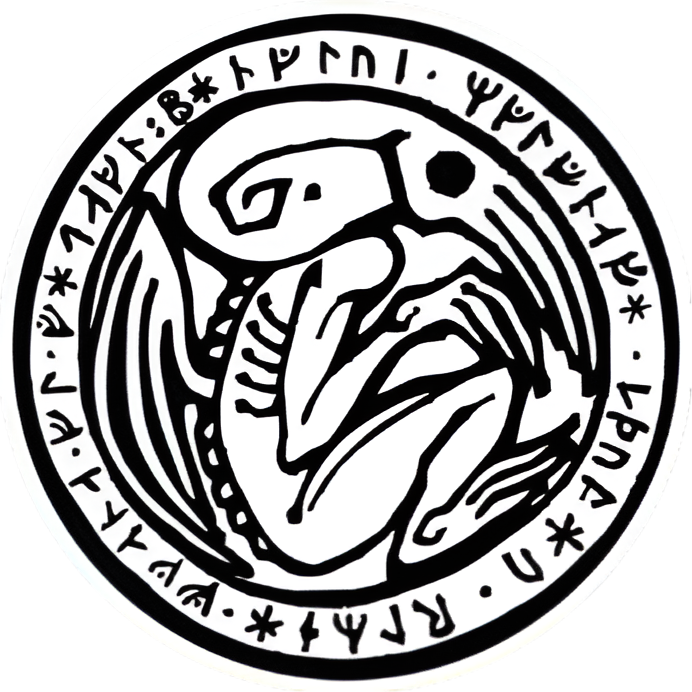
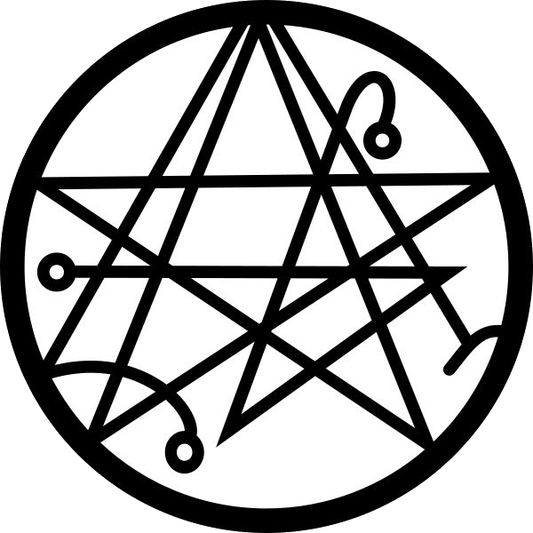
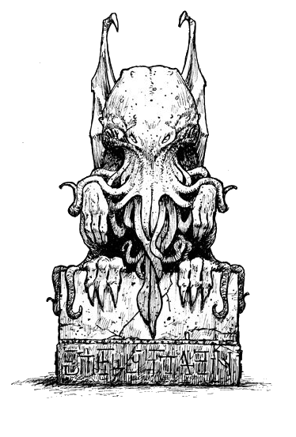

Procuram-se Ivestigadores!
Procuram-se mentes corajosas para desvendar o inexplicável. Além dos nossos medos mais profundos, existem verdades ocultas que devoram a própria razão. Procuram-se investigadores dispostos a encarar horrores que a ciência não explica e que a mente humana mal consegue suportar. A jornada será implacável, e o preço para conhecer a verdade pode custar a sua própria sanidade. Você se atreve a olhar para o abismo e responder ao chamado?
O Que É Call of Cthulhu RPG?

Chamado de Cthulhu é um jogo cheio de segredos, mistérios e horror. No papel de um investigador inabalável, você viajará para lugares estranhos e perigosos, descobrirá tramas abomináveis e desafiará os terrores da noite. Você encontrará entidades enlouquecedoras, monstros e cultistas insanos. Em tomos estranhos e esquecidos, você desvelará segredos que pessoa alguma deveria conhecer.
Chamado de Cthulhu é um RPG de horror baseado nos escritos de Howard Phillips Lovecraft, cujas obras revolucionaram o suspense ao criar a mitologia dos Mitos de Cthulhu, repleta de deuses ancestrais e alienígenas colossais que governaram a Terra no passado e hoje dormem ou habitam dimensões paralelas, aguardando o momento de retomar o controle do planeta. Em vez de heróis destemidos, as histórias exploram o medo primitivo do desconhecido através de protagonistas comuns e céticos — como acadêmicos, detetives e cientistas — que, ao investigarem cultos ou ruínas esquecidas, descobrem que a realidade é governada pelo horror cósmico. Esse subgênero se baseia na indiferença cósmica, onde essas entidades não possuem maldade deliberada, mas enxergam a humanidade com a mesma irrelevância que olhamos para insetos. Sob essa ótica, o conhecimento é uma força destrutiva: ao tentarem desvendar mistérios que desafiam as leis do tempo, do espaço e da física, a mente desses investigadores inevitavelmente entra em colapso, mostrando que o verdadeiro horror não é a morte física, mas a perda da sanidade diante de um universo frio, incompreensível e perfeitamente apático ao nosso destino.
Um jogador atua no papel de moderador do jogo,
sendo chamado de Guardião do Conhecimento Arcano
(“Guardião”, para abreviar), e o papel dele ou dela dentro das
regras é narrar o jogo para os outros jogadores. O resto dos
participantes assume o papel de intrépidos Investigadores
do Desconhecido (ou “investigadores”), tentando descobrir,
entender e eventualmente confrontar os horrores, mistérios
e segredos do Mythos de Cthulhu.
A maior parte do jogo acontece através de diálogos. O
Guardião define a cena, descrevendo o ambiente, os indi-
víduos e eventos para os jogadores. Estes dizem o que pre-
tendem que os seus investigadores façam. O Guardião então
lhes diz se conseguem fazê-lo e, caso não, o que acontece
como consequência. Durante uma sessão, o jogo acontece
na forma de uma conversa em grupo, só que com muitas
reviravoltas e diversão ao longo do caminho.
Fichas

Dossiê da Investigação
Em 2014, um estranho meteorito cai em uma fazenda isolada no interior do Maranhão e pouco se foi divulgado sobre o assunto. Há algo estranho nesse acontecimento que instiga seus instintos e sua curiosidade mas será que você está pronto para descobrir mais?
Detalhes do Caso
(A Mesa)
- Sistema: O Chamado de Cthulhu 7ª Edição
- Cenário: Maranhão, Flores, Fazenda Ypê Virente
- Gênero: Mistério, Investigação, Horror Cósmico e Violência
- Investigadores: Até 6 pessoas (para esse caso)
- Horários: Sextas-feiras, das 20h às 23h (Via Discord)
- Início dia 13 de Novembro
ATENÇÃO!
Esta mesa pode tratar de temas sensíveis ao decorrer da história
Recrutamento de Investigadores!
Ph'nglui mglw'nafh Cthulhu R'lyeh wgah'nagl fhtagn